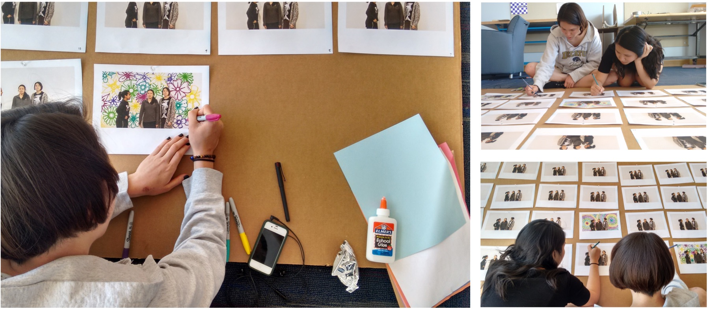

I love making videos, it's one of my favorite ways to tell stories. Here's a small sample. Enjoy!
I worked with mural artist IMAGINE to make a teaser video for her show Golden Equinox. You can check out the video and IMAGINE's work on her instagram: https://www.instagram.com/p/BvZgsJFh2yk
As a school with fewer than 360 students, Olin cultivates very interesting relationships. Olin Relationships is a film I directed that allowed friends, couples, siblings, and teammates to animate what their relationships mean to them. The conversations they had while drawing on the frames were overlaid into the film as the audio.
Two friends draw on the individual frames of their scene. I recorded their reflections on their friendship and used it as the film's audio.
From paper to video: I cut every frame that the Olin students drew, and converted them into video using a homemade rig (camera, clamps, and a clothes iron for counterweight).
Here's the final product! Thanks to all who participated.
I made this video for a crowdfunding campaign for Olin's electric racing team (REVO). With this video, the team was able to raise over $2000 and go to competitions.